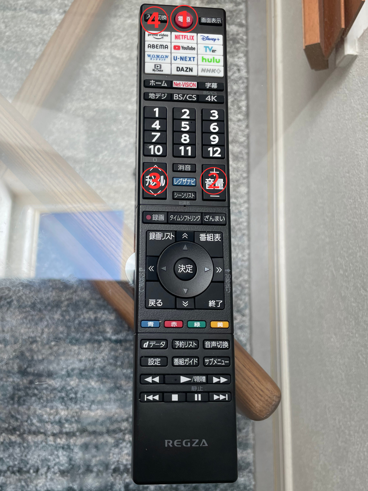
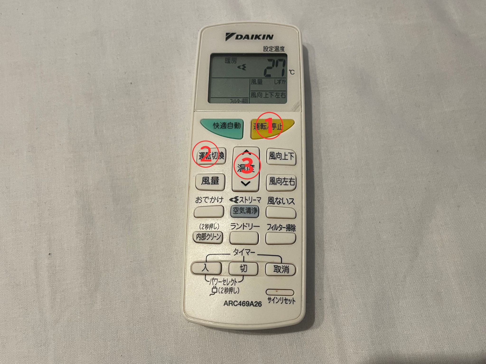
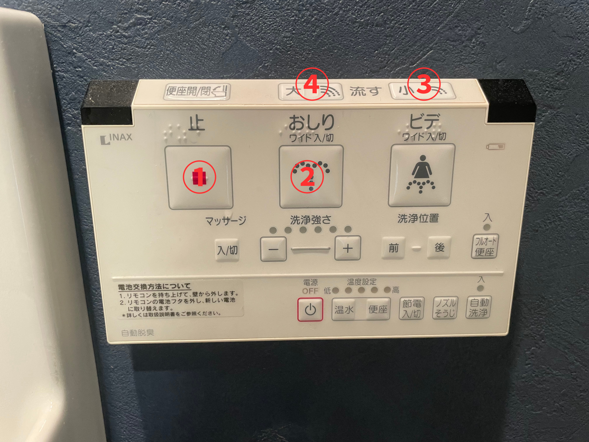
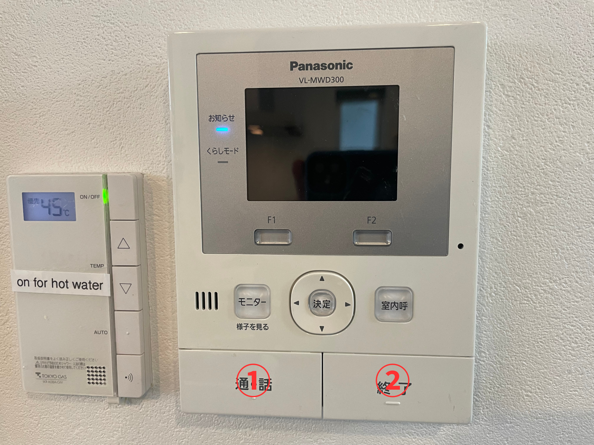

ハウスマニュアル
駐車場
parking area


テレビリモコン
TV remote

①ON/OFF
②volume
③channel
④Input switching
AC remote
エアコンのリモコン
①暖房 heating
②冷房 cooling
③除湿 dry
④温度 temperature
⑤停止 stop
.png)

①ON/OFF
②to change the running mode
暖房：heater
冷房:cooler
③温度 temperature
Washlet（bidet）
ウォシュレット

①OFF
②shower toilet
③④flush
Washing machine
洗濯機

①ON・OFF
②Select a course 標準 = standard、スピード ＝ Quick Wash
③Start・Pause
intercom
ドアホン

①call
②off
Circuit Breaker
ブレーカーが落ちた場合
.jpg)

If the breaker trips, turn off any appliances that were in use at the time and turn up all the switches.
This is in the bathroom.
もしブレーカーが落ちた場合、脱衣所にあるブレーカーを全て上げて下さい。
Gas Supply
ガスが止まった場合
.jpg)
.jpg)
When all the hot water supply in the house is stopped.
reset the gas meter outside.Please keep the button pressed.
給湯器がONになっているのにも関わらずお湯が出ない場合は、玄関向かって右側にございますガスメーターの復帰ボタンを長押しして下さい。
[Video](https://youtu.be/0YSmTuE4r2E?feature=shared)
Garbage separation
ゴミストッカー

.jpg)
Please put the full-garbage bag in the trash stocker on the outside.
お部屋のゴミがいっぱいになりましたら、外の駐車スペースにゴミストッカーがございますのでご利用ください。